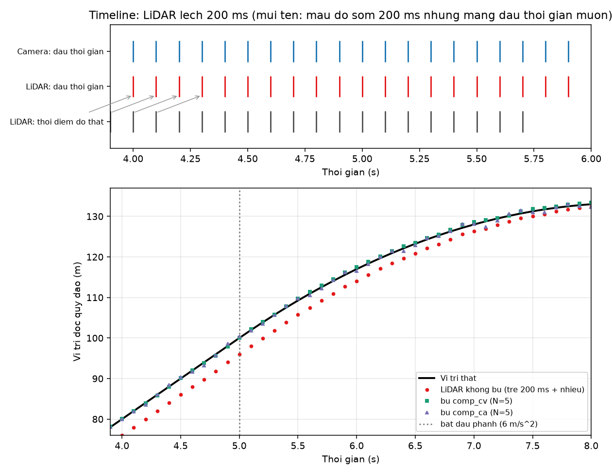
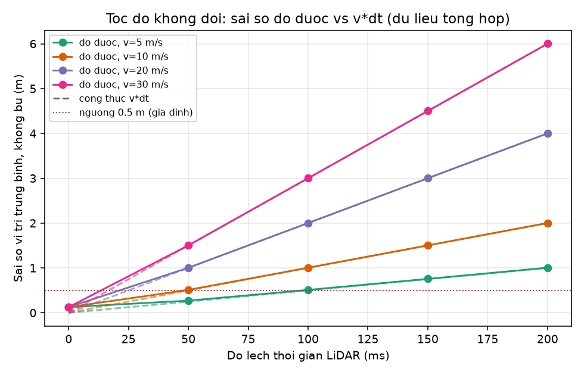
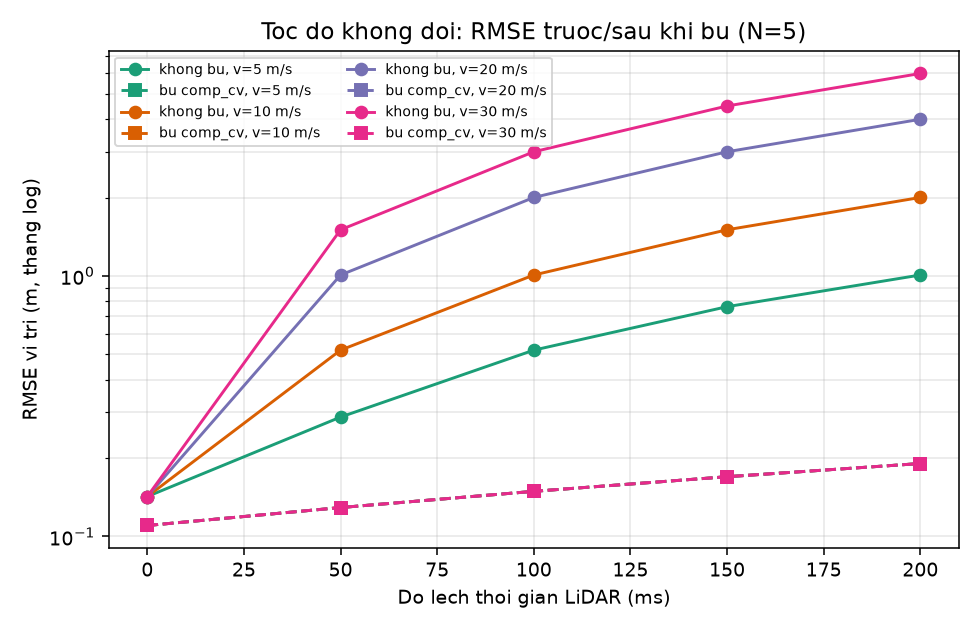
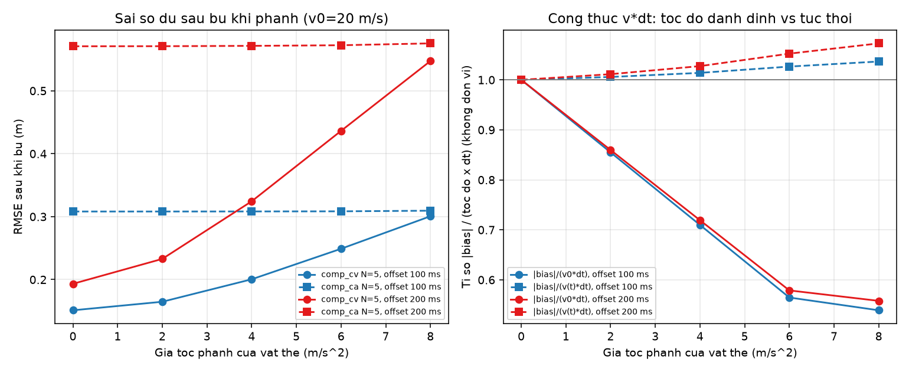

Nhóm TSV · xe ADAS · camera + LiDAR · dữ liệu tổng hợp (mô phỏng 2D, seed 42)
LiDAR bị dán nhãn giờ trễ Δt so với camera, nên vật chạy tốc độ v bị đặt sai khoảng v × Δt.
Xe mục tiêu 20 m/s, trễ 100 ms: lệch 2.00 m. Ngưỡng nhóm đặt: 0.5 m (giả định).
Mô phỏng 10 Hz, nhiễu 0.10 m, 200 lượt. Offset 0 (baseline) / 50 / 100 / 150 / 200 ms.
So không bù với bù vận tốc (LSQ trên N=5 khung, ngoại suy thêm Δt; Δt biết trước). Failure: vật phanh từ 20 m/s.
Tốc độ không đổi: |sai số| / (v×Δt) = 0.999–1.000.
20 m/s, 200 ms: 4.00 m → 0.19 m (giảm 95.2%). Bù giảm ≥ 81.1% khi v×Δt ≥ 1 m. Vượt 0.5 m từ 5.0 m/s ở 100 ms.
Vật phanh 8 m/s², offset 200 ms: bù còn sai 0.55 m (không phanh: 0.19 m); 59.1% khung vượt 0.5 m.
Giả thuyết (đã kiểm bằng công thức giải tích trong mô phỏng): bộ bù ước lượng vận tốc chậm pha nên bù thừa. Công thức v×Δt vẫn đúng nếu dùng v(t) (tỉ số 1.073). Trên dữ liệu thật: chưa kiểm.
Cần thêm: dữ liệu thật, lỗi ước lượng Δt, rolling shutter.
Offset 200 ms, vật phanh 6 m/s² từ t = 5 s (1 lượt mô phỏng)

Đường đỏ nằm sau đường vị trí thật.
Bù chuyển động (xanh, tím) kéo lại gần vị trí thật, kể cả khi vật bắt đầu phanh tại 5 s.
Tốc độ không đổi 5 / 10 / 20 / 30 m/s, offset 0–200 ms


20 m/s, 200 ms: 4.00 m không bù, 0.19 m sau bù. Sàn nhiễu của mô phỏng: 0.14 m.
v₀ = 20 m/s, phanh từ t = 5 s, cửa sổ đánh giá 5–8 s

Offset 200 ms: RMSE sau bù tăng 0.19 → 0.23 → 0.32 → 0.44 → 0.55 m khi a = 0 / 2 / 4 / 6 / 8 m/s². Giả thuyết trên dữ liệu thật: chưa kiểm.